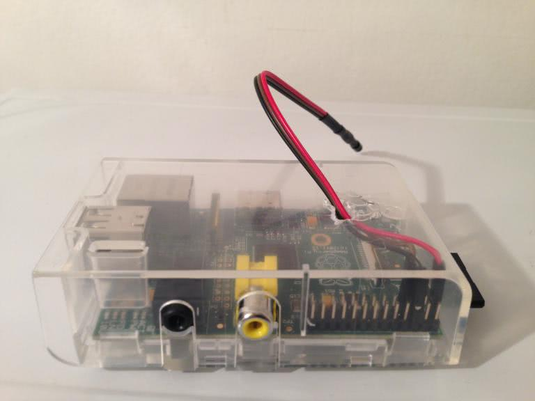
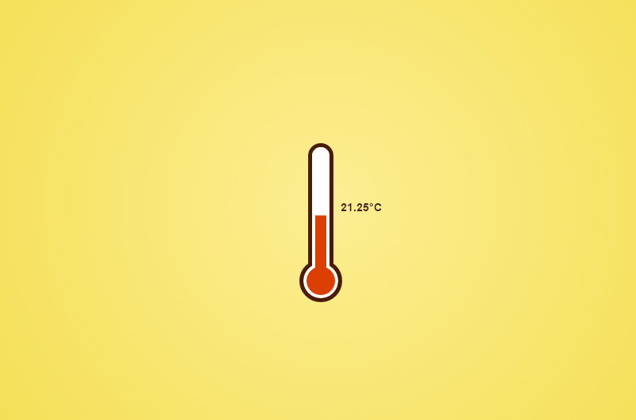

I have been owning and using a Raspberry Pi for over a year now. I started with Raspberry Pi model B and now I added Raspberry Pi 2 immediately after it was announced. Thanks to the fact that an IoT version of Windows 10 will run on the Pi, there is quite a hype about the Pi 2. Many people who did not care about the Pi before are now buying it because of that hype. And mostly they do not know what to do with it. So here is a list of things I used the Pi for, maybe you can get inspired.
Media center
I always wanted a small cheap low power media center to watch downloaded TV shows on the TV. The Pi was an ideal machine to built. I connected the Pi to a power source, ethernet, external hard drive the TV using HDMI. My distro of choice was RaspBMC at first but then I switched to XBIAN. Using this setup, the PI run XBMC (a media center software), that scanned the connected hard drive, found all the downloaded TV shows, and downloaded their metadata to make the experience better. Thanks to HDMI throughput I was able to control XBMC on the PI using the TV remote, not keyboard or mouse needed.
I use torrents to get the TV shows I watch, because there is no other option in my country (no Netflix, no Amazon Prime ..). I installed a torrent client on the PI (transmission), so the PI could download the TV shows on its own. The torrent client came with a web UI, I opened a port my my router and I was able to add torrents from the office, from the phone, etc.
So typically, on Monday, I came to the office in the morning. I realized, there was a new episode of say Top Gear last night. I opened the browser, found the right torrent and send it to the PI using the torrent clients web UI. When I came home in the afternoon, the TV shows was there, downloaded, waiting to be played on the TV.
There is one more great thing that XMC provides and that is streaming your content to mobile devices. You just enabled uPnP in the settings and you can stream your TV shows to your phone or tablet.
Thermometer
I am not a hardware guy but I wanted to do some hardware experimenters to use the PIs GPIO ports. I found a simple thermometer scheme, bought the components (a thermometer sensor and a resistor) a made a colleague solder it for me. I connected the thermometer the PI and I was able to read the temperature in the room.
Reading the temperature using the command line is not really comfortable, so I created a web UI for the thermometer. I wrote it in Node.js, because it seemed like an interesting platform to try. I made the whole project open source, and you can find it at https://github.com/igorkulman/rpi-thermometer.
Later I added a WiFi module and tried powering the PI from a battery bank. I basically created a WiFi enabled thermometer, that looked a bit strange. I think I need to get a small LCD display, so there is no need to open a browser when you just want to know the temperature.
NAS and backups
I had an external disk connected to the PI so I also ran Samba. I used it to offload some of my data to the PI. I am quite a paranoid person, so I also cloned all my personal and work Git repos to the PI and wrote a script that ran “git pull” on all of them every night.
Audio streaming in the office
Last week when I bought PI 2, I migrated my media center setup to it, leaving the old PI model B for experiments. I took the old PI to the office and finally solved a real world issue. There are speakers at the office that we use to play music. The problem is, whoever want to play the musics, needs to connect the speakers to their computer, so the speakers become exclusive and not shared.
So I connected the PI to the speakers and found and installed Music Box on the PI. It is a media streaming distro that allows you to play online music from sources like Youtube, Spotify or Google Music. Music Box had a web UI, so everybody on the office network could add their favorite songs to the queue easily using a browser.
Windows 10?
Running a version of Windows 10 on the Pi is really interesting when you think about it, but everything I did with the Pi I was able to do without Windows. I could do it because there was a ton of open source ready made tools to help me. At least in the beginning, this will be a problem with Windows 10. I am sure it will take some time for people to create things like thermometer drivers, GPIO control libraries, etc.
But there is one area I can see Windows 10 to excel on the Pi, and that is building GUI apps, especially touch enabled ones. Imagine you want to build something like a kiosk with a touchscreen and you need an app for that. Using Windows 10 instead of Linux will be much easier because building GUI app on Linux using QT or GTK is quite a pain, creating a Metro (universal) app is much easier.